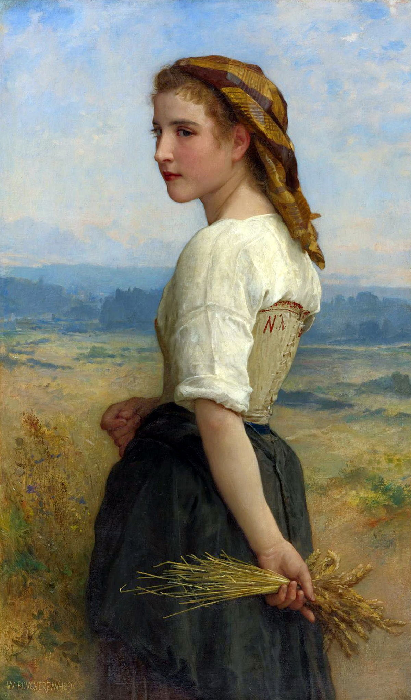
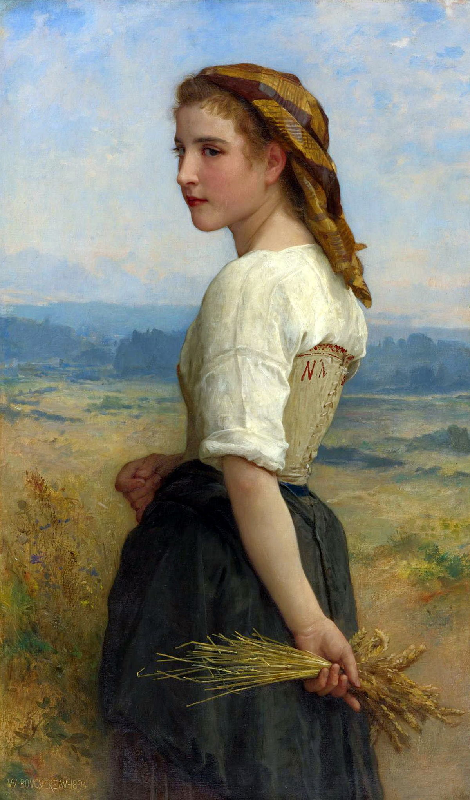
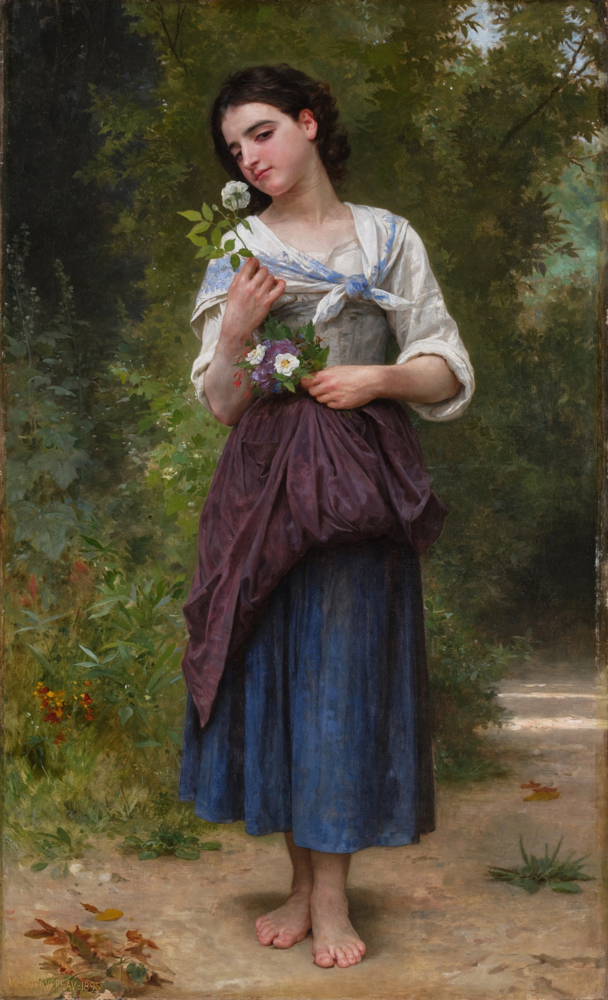
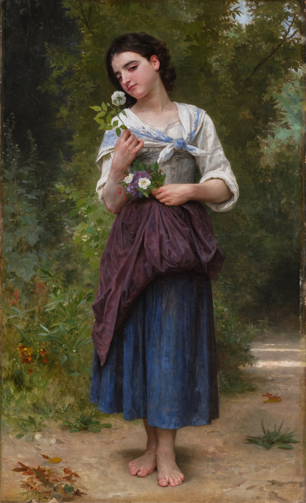

Bouguereau
William-Adolphe Bouguereau (French pronunciation: [wiljam adɔlf buɡ(ə)ʁo]; 30 November 1825 – 19 August 1905) was a French academic painter. In his realistic genre paintings, he used mythological themes, making modern interpretations of classical subjects, with an emphasis on the female human body.[1] During his life, he enjoyed significant popularity in France and the United States, was given numerous official honors, and received top prices for his work.[2] As the quintessential salon painter of his generation, he was reviled by the Impressionist avant-garde.[2] By the early twentieth century, Bouguereau and his art fell out of favor with the public, due in part to changing tastes.[2] In the 1980s, a revival of interest in figure painting led to a rediscovery of Bouguereau and his work.[2] He finished 822 known paintings, but the whereabouts of many are still unknown.

 


 
